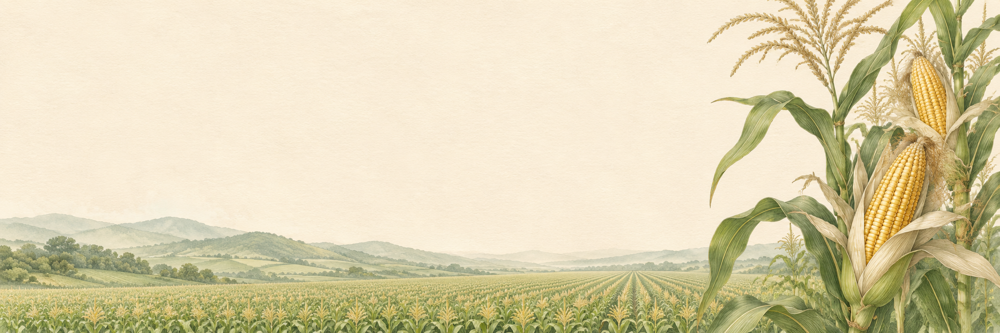

基因组雷达GENOME RADAR
基因组雷达GENOME RADAR
PLANT GENOMICS · WEEKLY READING
植物基因组学文献简报
PLANT GENOMICS WEEKLY DIGEST
2026年第41周
检索窗口 2026-10-05 ~ 2026-10-11

 PLANT GENOMICS · WEEKLY ARCHIVE
PLANT GENOMICS · WEEKLY ARCHIVE
基因组雷达 · GENOME RADARPlant J 6 · Plant Physiol 3 · New Phytol 3 · Mol Plant 2 · J Integr Plant Biol 2
基因组雷达GENOME RADAR2026年第41周 · 文章 01
Mol Plant1区 TopIF 17.1│进化与比较 / 方法与工具方法工具2026-10-08
构建36种绿色植物应激转录组图谱
Kingdom-wide comparative transcriptomics reveals deeply conserved and predictable stress response programs across Viridiplantae.
核心发现36种绿色植物、9类胁迫的应激转录组图谱，产出1360万条差异表达记录。
做了什么
以36种绿色植物（从绿藻到被子植物）为材料，整合重分析的公共RNA-seq数据与三种基部谱系物种的新增胁迫实验，覆盖9类非生物与生物胁迫，经3200余组人工审校的对照—处理比较，得到1360万条差异表达记录。
结论
古老基因家族响应广而弱，谱系特异家族响应窄而强，呈现胁迫基因部署的分工；响应保守性随系统发育距离衰减，但在超过7亿年分歧中仍可检出，上调基因比下调基因分化更快；功能共现分析揭示深度保守的生长—防御权衡及胁迫特异的转录重连；保守共表达模块经重复发生调控亚功能化，全基因组重复对优先保留在模块内；DNA与RNA基础模型仅凭序列预测胁迫响应性（auROC 0.755）。
为什么值得关注
把胁迫响应保守性的判断从个别模式物种推到全 kingdom 尺度：保守性可跨7亿年检出但随距离衰减，上调基因分化更快；做比较转录组或跨物种启动子分析的人可直接借用该图谱的差异表达调用与模块划分。
未来展望
还缺一场用独立物种与胁迫条件检验图谱预测力的验证，以及确认序列模型所捕捉的顺式调控代码在近缘谱系间是否同样成立。
研究阶段比较转录组图谱 + 36物种基准
基因组雷达GENOME RADAR2026年第41周 · 文章 02
J Integr Plant Biol1区IF 9.3│进化与比较 / 变异与关联原创研究2026-10-06
比较基因组学揭示小麦面筋品质的隐藏遗传决定因素
Comparative genomics reveals hidden genetic determinants of wheat gluten quality.
核心发现整合比较基因组学、QTL定位与单倍型关联，发现结构变异可能效应更大，上位性提供额外预测信息。
做了什么
以比较基因组学、QTL定位与单倍型关联整合分析小麦面筋品质相关变异，评估结构变异与上位性在品质遗传解析中的贡献。
结论
结构变异可能具有更大效应，上位性为预测提供额外信息；这些变异与小麦面筋品质相关，提示结构变异和上位性是改良面筋品质育种的重要考量。
为什么值得关注
改变仅依赖SNP与加性效应解析品质性状的判断，提醒育种者将结构变异和上位性纳入预测模型，对小麦品质基因组选择有直接参考价值。
未来展望
还缺结构变异与上位性效应在独立群体中的验证，以及它们对表型预测准确性的量化评估。
研究阶段比较基因组学 + QTL定位 + 单倍型关联
基因组雷达GENOME RADAR2026年第41周 · 文章 03
Plant Cell1区 TopIF 10.0│单细胞与空间 / 表观与调控原创研究
以单核与空间转录组解析线粒体胁迫信号的细胞与空间架构
Spatial and single-nucleus transcriptomic profiling reveal polarity and intracellular responses to mitochondrial dysfunction.
核心发现线粒体胁迫并非均一响应，而是重排表皮、叶肉等谱系的核转录状态分布。
做了什么
对拟南芥施加 antimycin A 与 myxothiazol 抑制线粒体电子传递链，采用单核 RNA 测序与空间转录组测序，刻画线粒体胁迫信号的细胞类型与空间组织；并用定制 465 探针 10× Xenium 面板与 52 个启动子-GFP 报告株系做验证。
结论
胁迫后核在表皮、叶面与叶肉谱系间的转录状态分布快速重排，胁迫相关簇在未处理样本中已低频存在、处理后细胞数增加；线粒体胁迫标记基因呈不同时序动态与细胞状态穿透差异，空间转录组显示从泛组织诱导到细胞类型与簇限制性激活，并揭示明显的近轴-远轴极性。
为什么值得关注
此前细胞器逆行信号研究仅依赖混合组织，掩盖了细胞类型特异性与空间组织；单核与空间分辨率下的状态重排与极性表达，使做线粒体信号、叶片极性的人可直接对照细胞类型标记与空间图谱重新判读 bulk 数据。
未来展望
还缺在遗传扰动背景下验证这些胁迫相关转录状态是否对应可区分的细胞命运轨迹，以及近轴-远轴极性是否由线粒体功能直接设定。
研究阶段单核与空间转录组 + 465 探针与 52 报告株系验证
基因组雷达GENOME RADAR2026年第41周 · 文章 04
Plant Biotechnol J1区IF 10.1│变异与关联 / 表观与调控原创研究2026-10-07
鉴定 GhEBS1 启动子近端内含子 845 bp 结构变异驱动棉铃大小分化
An Intronic Structural Variant in GhEBS1 Drives Cotton Fruit Size Divergence by Modulating Chromatin Accessibility and Gene Expression.
核心发现棉铃大小的调控位点落在 GhEBS1 启动子近端内含子一段 845 bp 结构变异上，改变染色质可及性。
做了什么
以图位克隆定位棉铃大小正调控因子，得到 F-box E3 泛素连接酶基因 GhEBS1；比较启动子近端内含子区一段 845 bp 结构变异对局部染色质可及性与组蛋白修饰的影响，并在棉花、番茄与拟南芥中过表达或异源表达该基因。
结论
845 bp 结构变异改变局部染色质可及性及 H3K27、H3K9 甲基化与乙酰化水平，进而调控 GhEBS1 表达并驱动铃大小分化；过表达或异源表达在棉花蒴果、番茄浆果、拟南芥角果中均促进果实增大；GhEBS1 与 GhPPD1/2、GhKIX8/9 互作，调控下游细胞增殖相关基因以控制细胞数与铃大小。
为什么值得关注
果实大小长期缺少可解释的因果位点，此处把表型差异落到一段可基因分型的 845 bp 结构变异上；做棉花产量性状定位与标记开发的人可直接把该位点纳入群体筛查，做染色质调控的人则多一个结构变异改变组蛋白修饰的实例。
未来展望
还缺在多个遗传背景与多点田间试验中验证 GhEBS1L 等位对产量性状的稳定效应，以及该结构变异在染色质层面如何被识别尚待直接证据。
研究阶段图位克隆 + 三种作物异源验证
基因组雷达GENOME RADAR2026年第41周 · 文章 05
Plant J2区IF 6.2│变异与关联 / 表观与调控原创研究
鉴定 IAMH2 3' UTR 结构变异调控拟南芥下胚轴伸长
Structural variation in the IAMH2 3' UTR underlies hypocotyl elongation during light adaptation in Arabidopsis thaliana.
核心发现西藏高海拔拟南芥生态型在弱光下下胚轴更长，主效位点 LA1 指向 IAMH2 的 3' UTR 结构变异。
做了什么
以西藏高海拔与四川低海拔拟南芥生态型为材料，经重组自交系、精细定位与近等基因系验证锁定主效位点 LA1，确定 IAMH2 为因果基因；全长转录组比较揭示高海拔生态型 IAMH2 3' UTR 存在自然结构变异，改变其长度并破坏一段 poly(U) 基序。
结论
低海拔生态型中 RNA 结合蛋白 C3H14/C3H15 直接结合该 poly(U) 富集区，转录后下调 IAMH2 mRNA 水平，削弱依赖 IAMH2 的 IAA 积累与下胚轴伸长；38 个全球代表性生态型基因组显示 IAMH2 3' UTR 变异与光照强度和海拔相关。
为什么值得关注
把下胚轴自然变异的解释从光受体编码区移到 3' UTR 顺式变异与 RNA 结合蛋白的互作，做光形态建成自然变异定位的群体可直接把 LA1 区间与 poly(U) 基序作为候选筛查位点。
未来展望
还缺一场验证：在更多高海拔与低海拔生态型中检验 3' UTR 变异与光强的定量关系，并用该位点编辑或等位替换确认其对下胚轴伸长与适应度的效应。
研究阶段定位克隆 + 38 个生态型基因组关联
基因组雷达GENOME RADAR2026年第41周 · 文章 06
Plant Commun1区IF 9.4│变异与关联 / 进化与比较原创研究2026-10-05
鉴定 GhFLA9_D12 自然变异调控棉纤维细胞壁可塑性
Natural variations in GhFLA9_D12 confer divergent fiber development and lint percentage through remodeling of cell wall plasticity in cotton.
核心发现GhFLA9_D12 位点存在选择性清除，优势单倍型 HapA（T/INS）与更高衣分关联。
做了什么
以 GhFLA9_D12 为对象，群体基因组学检测其位点选择信号，比较不同单倍型在衣分上的差异；结合启动子 162 bp 插入缺失对 GhAGL11 转录激活的影响、蛋白多糖结合偏好及糖基化修饰，解析等位变异对纤维发育的作用路径。
结论
GhFLA9_D12 位点受显著选择性清除，优势单倍型 HapA（T/INS）关联更高衣分并在现代育种中持续受选择，该有利变异可能由 Gossypium barbadense 渐渗至 G. hirsutum；启动子 162 bp 插入缺失改变 GhAGL11 的转录激活程度，编码区非同义突变改变多糖结合偏好，过表达不同等位基因产生纤维强度与细胞壁厚度的相反表型。
为什么值得关注
把衣分差异落到一个位点的两种变异上：启动子 162 bp 插入缺失决定表达量，编码突变改变多糖结合偏好，育种者可直接按 HapA 基因型筛选高衣分材料，纤维品质与产量同步改良有了可操作的靶点。
未来展望
还缺在更多遗传背景和多年多点田间试验中验证 HapA 对衣分与纤维品质的稳定效应，以及该位点渐渗片段在陆地棉育种群体中的实际频率与选择代价。
研究阶段群体基因组学 + 等位变异功能验证
基因组雷达GENOME RADAR2026年第41周 · 文章 07
Plant Physiol2区IF 6.5│变异与关联 / 方法与工具方法工具
鉴定PagERF173协调杨树根系硝酸盐吸收与同化
PagERF173 regulates nitrate uptake and assimilation in poplar roots.
核心发现162份杨树种质重测序分出4个遗传组，GWAS锁定PagERF173同时调控硝酸盐吸收与同化。
做了什么
对162份杨树种质（含自然与栽培种质）全基因组重测序，群体划分为4个遗传组；对栽培种质进行低氮处理筛选耐低氮材料，整合全基因组关联分析与加权基因共表达网络分析，锁定AP2/ERF转录因子PagERF173。
结论
低氮下PagERF173突变体与显性抑制株的硝酸盐吸收与积累低于过表达株，但同化能力增强，地上部与根系生物量均增加；过表达株趋势相反。PagERF173激活PagNRT5.6a增强根系硝酸盐吸收，同时与PagNR、PagNiR互作抑制其酶活，从而压制同化。
为什么值得关注
把耐低氮育种的目标从单一吸收或同化基因转向二者的协调节点：过表达提高吸收却压低生物量，敲低反而增产，提示筛选等位变异时应以整株生物量而非吸收量为判据。
未来展望
还缺田间低氮条件下的多年生物量验证，以及PagERF173自然等位变异在162份种质中与耐低氮表型的因果确认。
研究阶段关联分析 + 遗传转化验证
基因组雷达GENOME RADAR2026年第41周 · 文章 08
J Integr Plant Biol1区IF 9.3│变异与关联 / 进化与比较原创研究2026-10-04
揭示玉米氮利用效率非对称选择脱钩
Asymmetric selection decoupling of nitrogen use efficiency in maize.
核心发现整合表型、基因组与功能分析锁定 ZmLLG3，氮利用效率选择由单性状转向协同优化。
做了什么
以玉米为材料，整合表型、基因组与功能分析，鉴定 ZmLLG3 为氮素获取与再分配协同调控因子，解析氮利用效率在驯化选择中的解耦模式。
结论
ZmLLG3 调控氮素获取与再分配的协同，选择信号显示氮利用效率相关性状从单性状选择转向协同优化，表明非对称选择导致解耦。
为什么值得关注
玉米氮效率育种长期按单性状选择，ZmLLG3 及其协同调控关系提示应同时追踪获取与再分配两个环节，避免选择脱钩造成的效率损失。
未来展望
还缺在自然群体中验证 ZmLLG3 等位变异与氮效率表型的关联，以及多环境下的选择效应检验。
研究阶段表型+基因组+功能分析
基因组雷达GENOME RADAR2026年第41周 · 文章 09
Mol Plant1区 TopIF 17.1│变异与关联 / 表观与调控原创研究2026-10-10
鉴定 OsNHX2 并解析其转录与翻译后调控决定水稻耐冷
Transcriptional and post-transcriptional regulation of OsNHX2 encoding a tonoplast-localized transporter controls intracellular K+ accumulation to regulate cold tolerance in rice.
核心发现MAGIC 群体 GWAS 定位到液泡膜钾转运蛋白 OsNHX2，其耐冷单倍型多分布于高纬度地区。
做了什么
以多亲本高级世代互交（MAGIC）群体为材料开展全基因组关联分析，定位到编码液泡膜定位钾转运蛋白的 OsNHX2；随后验证其编码区自然变异对钾转运能力的影响，并追踪上游转录因子 OsATH1 与胞质蛋白 OsGAPC3 对 OsNHX2 的调控路径。
结论
OsNHX2 通过提高地上部钾含量促进脯氨酸积累、降低活性氧与丙二醛水平；启动子 45 bp 缺失削弱 OsATH1 结合而提升表达；OsGAPC3 与其互作遮蔽液泡膜定位信号、损害钾转运并造成胞质钾累积；过表达在冷胁迫下提高孕穗期结实率且正常条件不减产。
为什么值得关注
耐冷位点从转录层延伸到翻译后定位调控，提示单看表达量会漏掉 OsGAPC3 介导的定位切换；启动子 45 bp 缺失与编码区变异可作为分子标记，供水稻耐冷育种与高纬度种质筛选直接取用。
未来展望
还缺在自然群体与育种系中验证 45 bp 缺失及编码区变异的效应稳定性，并确认 OsGAPC3 介导的定位切换在田间低温下是否同样成立。
研究阶段GWAS 定位 + 转录与翻译后调控验证
基因组雷达GENOME RADAR2026年第41周 · 文章 10
Plant Cell1区 TopIF 10.0│方法与工具 / 表观与调控方法工具
用表达特异性预测玉米花粉适合度
Successful predictive modeling of pollen fitness phenotypes is enabled by measures of expression specificity.
核心发现表达特异性使机器学习模型区分玉米花粉强适合度效应基因的曲线下面积超过90%。
做了什么
以荧光标记的Ds-GFP插入突变系为材料，把突变对花粉传递率偏离孟德尔比例的定量效应与具体基因关联，再构建整合表达谱与基因组序列的机器学习框架，预测影响玉米花粉适合度的基因。
结论
仅用基因组序列特征（如密码子使用）即可区分强适合度效应基因与无效应基因，曲线下面积85%；加入表达数据后曲线下面积超过90%；可解释模型显示表达特异性是性能最强的关键特征，其与部分序列特征组合时模型最优，且预测结果与已知突变群体的突变频率预期相符。
为什么值得关注
把花粉适合度当作可批量测量的定量表型，并以表达特异性作为核心预测特征，改变了仅靠序列特征建模的判断；从事玉米突变体筛选与花粉传递率分析的研究者可据此优先检查表达特异性。
未来展望
还缺一场在独立突变群体和不同环境下的外部验证，以确认表达特异性特征的预测能力可跨群体迁移。
研究阶段机器学习建模 + Ds-GFP插入突变系
基因组雷达GENOME RADAR2026年第41周 · 文章 11
New Phytol1区IF 8.3│表观与调控 / 进化与比较原创研究2026-10-07
比较拟南芥与水稻Flg22免疫启动中5mC与6mA的差异化靶向
Distinct targeting of 5mC and 6mA DNA methylation during the onset of Flg22-induced immunity between Arabidopsis and rice.
核心发现Flg22诱导后，拟南芥与水稻非CG位点5mC在短常染色质转座元件上同步去甲基化，72小时后又共同在着丝粒区升高。
做了什么
以细菌激发子Flg22处理拟南芥与水稻，用Oxford Nanopore高分辨率测序同时检测5mC与6mA，比较两种基因组在免疫启动早期的全基因组DNA甲基化响应，并分析6mA去甲基化酶ALKBH1D突变体的表型。
结论
两种植物早期免疫激活均伴随短常染色质转座元件非CG位点5mC去甲基化；72 hpt时5mC在着丝粒区升高，拟南芥靶向近着丝粒非CG位点，水稻伴持续染色体臂低甲基化。6mA全局响应种间特异，但均呈转录起始与终止位点两侧的双峰分布，并在防御相关基因上增强；拟南芥中该6mA特征与Flg22预激活基因相关，ALKBH1D突变增加对Pseudomonas syringae与Meloidogyne incognita的敏感性。
为什么值得关注
此前6mA在植物免疫中的角色未知，该结果把6mA从候选调控标记推到防御转录重编程的功能层面，并给出ALKBH1D突变增加感病性的遗传证据；做表观修饰与抗病研究的人可据此重新评估6mA在免疫中的权重。
未来展望
还缺一场在单细胞或组织分辨率下追踪6mA与5mC动态的验证，以判断防御基因上的6mA增强是转录启动的原因还是结果。
研究阶段Oxford Nanopore测序 + 两种植物Flg22处理
基因组雷达GENOME RADAR2026年第41周 · 文章 12
Plant Physiol2区IF 6.5│方法与工具方法工具
用蛋白语言模型预测拟南芥与病毒蛋白互作
AraVirusPPI: a protein language model-powered method for predicting Arabidopsis thaliana-virus protein-protein interactions.
核心发现ESMC 编码序列特征结合 XGBoost，构建拟南芥—病毒蛋白互作预测框架 AraVirusPPI。
做了什么
以公开的拟南芥与病毒蛋白互作数据构建数据集，AraVirusPPI 用蛋白语言模型 ESMC 编码序列特征，再由 XGBoost 建立预测模型；系统比较多种蛋白与基因组语言模型搭配不同分类算法的组合，据此确定最终架构。
结论
在拟南芥—CabLCV 体系中预测互作，预测的病毒靶蛋白与拟南芥—TuMV、拟南芥—Psy 实验数据比较；网络拓扑与功能富集分析显示，预测的 CabLCV 靶标在拟南芥中与 TuMV 靶标更相似，而非 Psy 靶标。
为什么值得关注
植物—病毒互作实验鉴定成本高、通量低，该框架把预测范围从单一病毒扩展到拟南芥—病毒体系，做病毒靶标筛选与宿主靶点优先级排序的课题组可直接借用其建模范式。
未来展望
预测的 CabLCV 靶蛋白尚缺湿实验验证，与 TuMV 相似的结论也需在更多病毒体系中检验是否成立。
研究阶段算法 + 拟南芥—病毒互作数据集
基因组雷达GENOME RADAR2026年第41周 · 文章 13
Plant J2区IF 6.2│方法与工具方法工具
建立下胚轴针刺法实现丹参遗传转化与基因编辑
Hypocotyl acupuncture: an efficient and practical protocol for transformation and genome editing in Salvia miltiorrhiza.
核心发现下胚轴针刺法在非无菌条件下转化丹参，转化效率约55%，5个月获转基因植株。
做了什么
以完整丹参幼苗下胚轴为接种部位，用针刺辅助农杆菌接种，跳过愈伤诱导、再生与继代培养；接种后筛选EGFP阳性毛状根约4个月，再诱导出芽1个月，约5个月获转基因小苗；以效率和根形态选定ACCC10060为最优菌株。
结论
系统优化后转化效率约55%（产生EGFP阳性再生体的外植体比例）；CRISPR/Cas9编辑突变频率53.8%–88.9%，未检出脱靶；敲除丹参酮生物合成限速酶基因SmCPS1后根色改变；方法扩展至黄芪、桔梗和板蓝根，转化效率25%–55%。
为什么值得关注
丹参等药用植物长期缺可用的转化体系，55%的效率与5个月周期把遗传操作从依赖组培的瓶颈中释放出来；做丹参酮途径与药用植物功能基因组的人可直接搬用该接种与筛选流程。
未来展望
还缺在更多药用植物物种上验证其可重复性，以及确认外源片段在再生植株后代中的稳定遗传。
研究阶段方法建立 + 4个物种转化验证
基因组雷达GENOME RADAR2026年第41周 · 文章 14
Plant J2区IF 6.2│方法与工具 / 单细胞与空间方法工具
激光显微切割转录组解析白骨壤盐腺泌盐机制
A laser capture microdissection-based transcriptome analysis on salt glands highlights salt secretion mechanism in mangrove plant Avicennia marina.
核心发现400 mM NaCl下白骨壤盐腺Na+外排达2389 pmol cm-2 s-1，鉴定出1741个差异表达基因。
做了什么
以白骨壤叶片上表皮盐腺为对象，激光显微切割分离盐腺后行转录组测序，比较0与400 mM NaCl处理下的基因表达谱；非损伤微测技术测单个盐腺Na+、Cl-实时外排速率，透射电镜观察亚细胞结构，异源表达验证候选基因功能。
结论
400 mM NaCl使盐腺Na+外排达2389 pmol cm-2 s-1、Cl-外排达1652 pmol cm-2 s-1，分泌细胞线粒体密度与囊泡数量显著增加；转录组鉴定1741个差异表达基因，富集于囊泡运输、离子转运、相容溶质运输、水通道蛋白介导的水运输、激素信号及细胞壁与角质层蜡质合成通路；AmNHX2、AmCLC-a、AmSCAMP1在酵母、烟草或拟南芥中异源表达显著增强耐盐性。
为什么值得关注
盐腺作为单细胞尺度器官，其转录组此前难以与表皮细胞区分；激光显微切割把泌盐部位的表达谱单独取出，使离子转运、囊泡运输与细胞壁重塑在盐腺中的分工可被逐项检验，做红树林耐盐与盐腺发育的工作可直接沿用这一取样与验证路线。
未来展望
还缺盐腺特异启动子驱动的原位遗传验证，以确认AmNHX2、AmCLC-a、AmSCAMP1在盐腺分泌细胞中的实际贡献；异源表达与盐腺原位功能之间的差距尚未闭合。
研究阶段激光显微切割转录组 + 异源表达验证
基因组雷达GENOME RADAR2026年第41周 · 文章 15
New Phytol1区IF 8.3│变异与关联 / 表观与调控原创研究2026-10-07
鉴定 STRONG3 与 4CL4 协同增强水稻茎秆强度
STRONG3 promotes lignin biosynthesis and culm strength in rice.
核心发现对 405 份水稻材料的木质素含量做全基因组关联分析，定位到调控茎秆强度的 STRONG3。
做了什么
以 405 份水稻材料的木质素含量为性状做全基因组关联分析，锁定乙烯响应因子类转录因子 STRONG3，并经功能验证与遗传互补确认其作用于 4CL4 上游；单倍型分析按粳、籼两个亚种比较等位变异，组合分析检验两基因等位变异的联合效应。
结论
STRONG3 通过促进厚壁组织发育、维管束增大和次生细胞壁增厚，正向调控木质素积累、茎粗与机械强度；它直接结合 4CL4 启动子的 GCC-box 激活转录。粳稻优势等位 STRONG3G 由 4349512 位单核苷酸多态导致 Ala289Thr 替换、增强对 4CL4 的激活，籼稻优势等位为 4CL4TC，二者在本亚种内协同改善茎秆性状；过表达 STRONG3 增强抗倒伏且不减产。
为什么值得关注
抗倒伏育种长期在产量与茎秆强度之间取舍，这里给出的路径显示过表达单个转录因子即可增强抗倒伏而不牺牲产量；粳稻 STRONG3G 与籼稻 4CL4TC 是亚种特异的等位组合，做分子标记辅助选择的育种者可直接据此筛选亲本。
未来展望
还缺两场验证：STRONG3G 与 4CL4TC 在田间多环境下的抗倒伏效应是否稳定，以及过表达株系在多年多点试验中产量是否始终不减。
研究阶段关联分析 + 功能验证 + 单倍型分析
基因组雷达GENOME RADAR2026年第41周 · 文章 16
Plant J2区IF 6.2│变异与关联 / 组装与注释原创研究
克隆陆地棉D13染色体van基因并解析其双盾功能
GhMYB106_D13 coordinates cuticle biosynthesis to build the dual shields for anther protection in upland cotton.
核心发现GhMYB106_D13缺失使花药总蜡质下降约27.6%，超表达则积累蜡质。
做了什么
以陆地棉D13染色体上易感花药基因van为对象，图位克隆得到GhMYB106_D13；比较D13与A13间MYB106分布差异；结合转录组、代谢谱与显微观察，分析超表达与敲除株系花药角质层。
结论
GC-MS显示敲除GhMYB106_D13后总蜡质下降约27.6%，以极长链烷烃减少为主，超表达则蜡质积累；FACR2、LACS1、HHT1、PXG4动态变化，突变体第8期花药中LACS1下调，16-FA水平改变可能关联FACR2、CYP704B1、HHT1上调。
为什么值得关注
把花药保护拆成角质层与表皮毛两道物理屏障，并归因于一个MYB基因；棉花抗逆育种与多倍体基因趋同演化研究者可直接检验该位点。
未来展望
还缺在多种遗传背景与田间逆境下验证蜡质下降27.6%是否稳定对应花药保护与产量，以及D13/A13趋同演化是否在更多多倍体中得到重复。
研究阶段图位克隆 + 转录组与GC-MS验证
基因组雷达GENOME RADAR2026年第41周 · 文章 17
Plant J2区IF 6.2│变异与关联 / 进化与比较原创研究
揭示SDR3.1负调控禾本科作物种子休眠
SDR3.1 negatively regulates seed dormancy in Poaceae crops.
核心发现SDR3.1与ABI3/ABI5形成复合体抑制Sdr4转录，L型与n/K型组合发芽率低。
做了什么
以水稻为模式，解析两个休眠数量性状位点SDR3.1与Sdr4的关系：SDR3.1与ABI3、ABI5形成复合体并抑制其对Sdr4转录的激活；结合单倍型分析与转基因验证，比较水稻、谷子、玉米中SDR3.1同源基因的功能。
结论
SDR3.1与ABI3/ABI5形成复合体，抑制后者激活Sdr4转录；SDR3.1 L型与Sdr4 n型或K型组合的发芽率低，现代核心育种亲本不含l型；转基因试验证实SDR3.1同源基因在水稻、谷子、玉米中保守控制种子休眠，但分子调控机制不同。
为什么值得关注
把SDR3.1-ABI3/ABI5-Sdr4串成一条可操作的调控模块，穗发芽抗性育种从此可按单倍型组合筛选，而非单基因取舍；禾本科其他作物可借水稻模型定位核心功能基因。
未来展望
还缺在更多禾本科物种与自然群体中验证该模块的保守性与单倍型效应，并确认L型与n/K型组合在田间穗发芽条件下的实际抗性。
研究阶段基因互作解析 + 多物种转基因验证
基因组雷达GENOME RADAR2026年第41周 · 文章 18
Plant Physiol2区IF 6.5│表观与调控原创研究
揭示赤霉素经PtrLBD39–PtrHDA6–PtrHCT表观通路抑制木质素合成
Gibberellin-mediated PtrLBD39-PtrHDA6-PtrHCT epigenetic path regulates lignin biosynthesis during tension wood formation in Populus trichocarpa.
核心发现毛果杨应拉木中赤霉素积累激活PtrLBD39，经组蛋白去乙酰化抑制PtrHCT1/6转录，木质素沉积下降。
做了什么
以毛果杨应拉木为材料，结合赤霉素合成抑制、CRISPR敲除与dCas9介导的位点特异性激活、ChIP-seq、EMSA及Y2H/BiFC/pull-down，从16个HDAC中筛选并验证PtrHDA6-A/B与PtrLBD39的互作，并在应拉木发育中经ChIP-qPCR确认对PtrHCT1/6启动子的靶向募集。
结论
应拉木形成伴随赤霉素积累并诱导PtrLBD39表达；抑制赤霉素合成削弱PtrLBD39诱导并恢复木质素沉积。PtrLBD39敲除提高木质素含量，其位点特异性激活则降低木质素。PtrLBD39经TCACGB基序直接结合PtrHCT1与PtrHCT6启动子，招募PtrHDA6-A/B去乙酰化H3K9ac与H3K14ac，抑制转录并减少木质素。
为什么值得关注
把赤霉素信号与木质素抑制之间的空缺补成一条可检验的转录—表观链：LBD39作为抑制节点，HDA6为执行者，HCT1/6为输出。做应拉木、木材品质或赤霉素调控木质素的人，可据此重新判断激素处理与表观修饰的先后关系。
未来展望
还缺在整株水平上区分PtrHDA6-A与PtrHDA6-B功能冗余的遗传验证，以及田间机械胁迫下该通路的剂量—响应关系是否成立。
研究阶段遗传学 + 表观组学 + 毛果杨应拉木体系
基因组雷达GENOME RADAR2026年第41周 · 文章 19
Plant J2区IF 6.2│表观与调控原创研究
热 priming 提升番茄复发性热胁迫后产量并揭示 SlHSFA2-SlERFs 调控模块
Thermal priming enhances yield after recurrent heat stress and involves SlHSFA2-SlERFs in the regulation of transcriptional thermal memory in tomato.
核心发现番茄热记忆能力长于拟南芥，热 priming 后在控制与田间条件下均提升产量。
做了什么
以番茄（Solanum lycopersicum）为材料，比较其与拟南芥的热记忆能力，并在控制与田间条件下进行热 priming 后复发性热胁迫处理；利用 hsfa2 CRISPR 突变体检验 SlHSFA2 功能，结合转录本分析鉴定 II 型热记忆基因，并检测 SlHSFA2 与 SlERFs 的互作。
结论
番茄热记忆持续时间长于拟南芥；热 priming 后复发性热胁迫在控制与田间条件下均提升番茄产量；hsfa2 CRISPR 突变体丧失 priming 能力，SlHSFA2 正调控包括 SlBAG6 在内的部分 II 型转录热记忆基因，并与 SlERFs 互作作为共激活因子增强热响应表达。
为什么值得关注
番茄热记忆长于拟南芥，提示模式植物结论不能直接外推至园艺作物；SlHSFA2-SlERFs 模块与 SlBAG6 可作为番茄耐热筛选的候选节点，供做作物热胁迫记忆的团队检验。
未来展望
还缺一场在更多番茄品种与不同热胁迫强度下的田间验证，以确认该模块对产量的效应是否稳定。
研究阶段基因编辑突变体 + 控制与田间表型
基因组雷达GENOME RADAR2026年第41周 · 文章 20
New Phytol1区IF 8.3│表观与调控 / 进化与比较原创研究2026-10-07
敲除 HvAOC 揭示茉莉酸调控大麦株型、花期与粒长
Jasmonate biosynthesis regulates key events in barley vegetative and reproductive development.
核心发现大麦 HvAOC 缺陷降低茉莉酸水平，株型增大、花期提前、籽粒变长，外施茉莉酸甲酯可全部恢复。
做了什么
以大麦 Hordeum vulgare spp. vulgare 的 ALLENE OXIDASE CYCLASE（HvAOC）为靶点，编辑该茉莉酸生物合成酶基因，获得 hvaoc 突变体，考察发育表型、遗传互作与转录组变化，并以茉莉酸甲酯处理检验表型回复。
结论
HvAOC 缺陷等位基因降低茉莉酸水平，导致营养生长增强、花期提前、籽粒变长，三类表型均可由茉莉酸甲酯处理恢复；粒长受 HvAOC 控制呈母本来源，与 HvAOC 在母体组织较子代组织高表达一致；粒形变化与颖壳尺寸解耦，伴随胚乳腔增大、母体组织存留更久及蔗糖转运相关基因表达升高。
为什么值得关注
粒长由母体组织而非颖壳决定，把粒形调控的落点从子代移到母体组织退化节奏上；做大麦穗部性状与激素遗传解析的团队可直接把 hvaoc 突变体与母体组织转录组当作对照材料。
未来展望
还缺一场验证：母体组织存留与蔗糖转运基因表达升高之间是因果还是伴随，需组织特异性操控 HvAOC 来判定。
研究阶段基因编辑突变体 + 转录组与激素表型